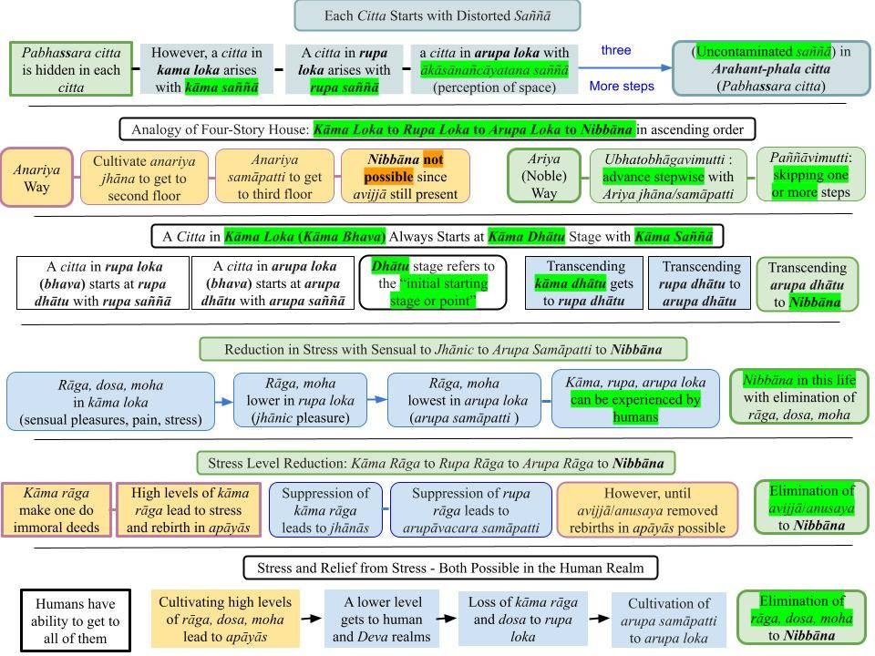

A citta arises with a distorted saññā. Then, it may further contaminate within its short life depending on the ārammaṇa.
August 12, 2023; revised August 31, 2023; September 7, 2024 (#3, #4)

Download/Print: "B2. Each Citta Starts with Distorted Saññā."
A Citta Does Not Start as a Pabhassara Citta
1. In the two previous posts of the new series on "Recovering the Suffering-Free Pure Mind," we discussed the fact that a "pure mind" is covered by defilements, which can be discussed in various ways. For example, rāga, dosa, moha or saṁyojana or anusaya, etc.
- As we discussed in the first post there, the Buddha stated: “Pabhassaramidaṁ (Pabhassaraṁ idaṁ) bhikkhave, cittaṁ. Tañca kho āgantukehi upakkilesehi upakkiliṭṭhaṁ" OR "Bhikkhus, the mind is (inherently) without defilements and thus is not conducive to rebirth. But it is (normally) corrupted by the defilements."
- However, that does not mean that each citta starts as a pabhassara citta and gets contaminated during its brief lifetime. Instead, it starts in a contaminated state, and that initial "contamination level" can be roughly separated into three main categories, as we will discuss below.
The Analogy of a Four-Story House
2. The Buddha separated the 31 realms in the world (loka) into three lokās: kāma loka, rupa loka, and arupa loka. We can visualize those three categories as the first three stories of a four-story house.
- The first story corresponds to kāma loka with the lowest 11 realms: four realms of the apāyās, the human realm, and the six Deva realms. "Kāma loka" also means "kāma bhava." All five physical sense faculties (and the mind) are present in kāma loka.
- The second story is analogous to the 16 rupāvacara Brahma realms: "rupa loka" or "rupa bhava" with generally two physical sense faculties (sight and sound.)
- The third level corresponds to the arupa loka with the highest four arupāvacara Brahma realms, where no physical sense faculties are present, and only the mind is present.
- As one climbs to higher floors, in general, the level of suffering is reduced.
3. The close sensory contacts of taste, smell, and touch are present only at the lowest level, i.e., kāma loka. Those are the leading avenues for experiencing "sensual pleasures" (kāma assāda); the other three sense faculties (sight, sound, mind) are also employed to optimize kāma assāda.
- However, seeking such kāma assāda leads to committing immoral deeds, which lead to mental suffering and also bad rebirths, i.e., those in the apāyās. Some ancient yogis (even before the Buddha) realized that and deliberately avoided kāma assāda (by living in remote jungles) and cultivated anariya jhānās. When the mind is removed from kāma assāda, it automatically moves to the next higher level with less stress. In our analogy, that is equivalent to moving to the second story of the house. Upon death, such a yogi is born in a rupāvacara Brahma realm.
- One could cultivate progressively higher jhānās and then cross over to the third level of "arupa samāpatti" in arupa loka. Only the mind remains here, and sight and sound faculties also become ineffective. This is where even the "mental suffering/stress" is minimal. At death, such a yogi is born in an arupāvacara Brahma realm with a long lifetime.
- Before the Buddha, that was all known to the world. Those yogis who attained rupāvacara jhānās or arupāvacara samāpatti thought they had eliminated suffering permanently.
- However, the Buddha taught that the lifetimes in the rupāvacara and arupāvacara Brahma realms were finite; at the end of those lives, they "come back down" to the lower levels and can end up in the apāyās too.
- He showed that there is a "fourth level" where there is not even a trace of suffering; that is the "suffering-free state" (pabhassara citta) attained at Arahanthood. Furthermore, once one reaches that state, a return to the suffering-filled lower levels will never happen.
"Three Lower Levels" Have distorted Saññā
4. Saññā (together with vedanā) is a fundamental mental characteristic. Even though vedanā and saññā belong to the general category of mental factors (cetasika), they are highlighted as two of the five aggregates (rupa, vedanā, saññā, saṅkhāra, viññāna), whereas the rest of the 50 cetasika are aggregated under saṅkhāra. It is necessary to get a good idea of saññā: "Saññā – What It Really Means."
- "Kāma rāga," or "preference for sensual pleasures," dominates on the first floor of the "four-level house" in our analogy. Of course, the qualities of this "kāma saññā" vary drastically from the apāyās to the human realm to the six Deva realms. It can be further analyzed at subtle levels, even within the human realm. Each sentient being in the kāma loka has their intrinsic level of "kāma saññā" that one is born with. That is related to the "natural bhavaṅga state"; see #3 of "Upaya and Upādāna – Two Stages of Attachment". The critical point is that they all have a standard root level, "rupa saññā" based on all six senses or five physical senses, i.e., pañca kāma. Since the mind is present in all realms, the distinction here is the availability of five types of "sensual pleasures" or "pañca kāma."
- A mind can overcome the "kāma dhātu" and move to the next level of "rupa dhātu," where it will only experience sights and sounds that are not "close contacts." These sensory contacts do not require "dense physical bodies," and thus, rupāvacara Brahmās have invisible, subtle bodies made of only a few suddhāṭṭhaka. The burdens associated with a physical body are absent, and they enjoy long-lasting "jhānic pleasures." They do not have any perception of tastes, smells, or touches. Even though physical suffering is absent, there is still "mental stress" stress in the rupa loka. Here, the "rupa saññā" is based on only three senses.
- Even that mental stress will become less for yogis who proceed to the next -- third level -- of "arupa loka" with a subtle "arupa saññā" based on only the mind. However, even that state is not permanent. Those yogis born there have long lifetimes, but their lives end, and they will be reborn in lower realms. However, they did not know how to reach the next higher fourth level. Only a Buddha can discover the way to get to that fourth level.
- Only at that fourth level would one have the root level of saññā associated with a pabhassara citta. Only the defilement-free, pure mind of an Arahant has access to that pabhassara citta.
Ascendence to Higher Levels - Anariya and Ariya Methods
5. One can overcome kāma rāga and move up to the mindset of a rupāvacara Brahma in "rupa loka" (starting with "rupa dhātu") by forcefully keeping the mind away from sensual thoughts. That is impossible to do while living in a normal society, where one is constantly subjected to sensory attractions. Ancient yogis moved away from women and other mind-pleasing ārammaṇa to cultivate anariya jhāna.
- Some yogis could even move up to the third level by continuing their anariya mediations (kasina/breath meditations), which kept their minds on "neutral objects" like balls of clay, fires, and the breath.
- However, since those methods did not help REMOVE the hidden defilements in their minds (saṁyojana, anusaya, etc.), they were forced to "come down" to lower levels once their lifetimes in the higher levels expired.
- The Buddha realized that suppressing defilements was not enough. To attain permanent release from all 31 realms, they must be eliminated.
Back to the Analogy of a Four-Story House
6. We can visualize that as follows. Imagine a four-story house with stairways to climb to the higher floors and "sliding ramps" (like those in parks where kids slide down) to slide down to lower levels.
- In the case of anariya yogis, they would have access to only the first three floors, with two stairways for climbing up and two downward ramps (for a quick descent.)
- With much effort, some get to the second floor and stay there even after death by having a rebirth in a rupāvacara Brahma realm. However, at the end of the lifetime, the floor will shrink, and they will be directed automatically to the downward ramp, and will fall to the ground level.
- Some yogis may make an extra effort to reach the third floor and live there for a long time, even after death, until that arupāvacara Brahma lifespan comes to an end. Then, they will also end up on the ground floor via the downward ramp.
7. In contrast, when a Nobel Person (Ariya) gets to the second floor, any connection to the first floor will be permanently removed, i.e., both the staircase and the downward ramp connecting to the ground floor will disappear, in our "house analogy." That is equivalent to breaking off the first FIVE saṁyojana and permanently separating from the realms of the "kāma loka" with "kāma saññā." At that point, one would be an Anāgāmi.
- That Anāgāmi can further cultivate the Path and break the "rupa rāga saṁyojana" and get to the third floor or the "arupa loka." At that point, both the staircase and the downward ramp connecting to the second floor will disappear, in our "house analogy."
- From there, the Anāgāmi can further cultivate the Path, break the remaining four saṁyojana, and get to the top floor or to "saupādisesā Nibbāna," i.e., "Nibbāna within this life." At that point, both the staircase and the downward ramp connecting to the third floor will disappear, in our "house analogy." That is a living Arahant.
- Once the remaining lifetime of that Arahant runs out, the whole house will disappear. There will be no trace of that Arahant "in this world." That is "anupādisesā Nibbāna," the end of suffering!
- The two types of Nibbāna discussed in the "Nibbānadhātu Sutta (iti 44)."
Difference Between Ubhatobhāgavimutta and Paññāvimutti Arahants
8. The "stepwise ascendance" to Nibbāna described above holds only for one set of Arahants. Just like the anariya yogis, they proceed up the "jhāna/samāpatti ladder" (but with the Ariya versions). They complete all jhānic/samāpatti stages and also attain the highest wisdom (Sammā Ñāṇa.) Thus, they are "ubhatobhāgavimutta" (released both ways: "ubhato" meaning "both ways" and "vimutta" meaning "released") Arahants. See "Ubhatobhāgavimutta Sutta (AN 9.45)."
- However, some may ascend to the Arahant stage directly without spending time in any intermediate jhāna/samāpatti stage; they pass through those stages quickly. However, there may be others in this category who may have spent time in one or more of the intermediate jhānic/samāpatti stages. These Arahants make progress mostly with paññā (wisdom) and thus are "paññāvimutti Arahants." See "Paññāvimutta Sutta (AN 9.44)."
A Citta Arises with the Corresponding Saññā Associated with Each "Floor"
9. As we discussed above, the 31 realms in the world (loka) can be divided into three main categories: kāma loka, rupa loka, and arupa loka.
The word "dhātu" usually means the "beginning stage" or "initial point." For example, a citta in kama loka arises with kāma saññā at the kāma dhātu stage. This citta then rapidly gets contaminated within its lifetime and ends up in the viññāna stage; see #11 below.
- Kāma loka beings perceive the world based on all six senses (i.e., five physical senses or pañca kāma.) Any citta arises from the initial kāma dhātu stage with its characteristic "kāma saññā" and then may further contaminate when kāmaguṇa comes into play; we will discuss this in future posts. However, beings in different levels will have their own "kāma saññā;" for example, while an animal and a human both will have "kāma saññā," they will be different.
- Beings in the rupa loka have perceptions based on only three senses. Thus, a citta in rupa loka arises at the rupa dhātu stage with "rupa saññā." They don't have saññā for taste, smell, and touch, i.e., they have no perception of taste, smell, and touch.
- Similarly, a citta of an arupāvacara being starts at the "arupa dhātu stage" with "arupa saññā." They don't have saññā for sights and sounds either. That is why the minds there are relatively free of stress.
Contamination of a Citta Happens Mostly in the Human Realm
10. Those beings in the apāyās are mostly like robots; they cannot contaminate or cleanse their cittās. Simply put, they mainly undergo suffering (some level of relief in the animal realm) but are unable to generate puññābhisaṅkhāra or apuññābhisaṅkhāra (or kusala/akusala) to a significant extent.
- Those in the Deva and Brahma realms (who have not attained any magga phala) are in a similar situation. They do not have much suffering to deal with but mainly spend their lifetimes without accumulating puññābhisaṅkhāra or apuññābhisaṅkhāra (or kusala/akusala) to a significant extent.
- The human realm is unique. A human has the ability to "access" any realm ranging from the lowest niraya to the highest arupāvacara realms by cultivating corresponding types of saṅkhāra. Not only that, a human can attain Arahanthood as well. That is why human birth is so precious and must not be wasted!
11. From now on, we will focus on the development of a citta (within its brief lifetime) in the kāma loka, where pañca kāma comes into play.
- Even though a citta starts at the kāma dhātu stage with its characteristic kāma saññā, it will then undergo "further contamination," incorporating more defilements within an astonishingly short time (a billionth of a second), ending up in the thoroughly defiled "viññāna stage" and then incorporated into the "viññāna khandha" or "viññānakkhandha." See "Citta, Manō, Viññāna – Stages of a Thought."
- The amount of defilements incorporated depends on the sensory input. Some "neutral inputs" do not lead to much further contamination, but an attractive or repulsive input can lead to significant contamination.
Further Contamination of a Citta with Kāmaguṇa
12. Now we have the background to discuss how a citta starting from the kāma dhātu stage with kāma saññā gets further contaminated WITHIN the lifetime of the citta due to kāmaguṇa (or kāma guṇa) that may arise in mind.
- The critical point is that it is possible to stop the mind from contaminating the initial kāma dhātu (with kāma saññā) to the further defiled states where one does immoral deeds with the mind, speech, and the physical body. That is the basis of the correct Satipaṭṭhāna.
- We will discuss that in the upcoming posts.
All posts in this series: "Recovering the Suffering-Free Pure Mind."
Um Citta surge com uma Saññā distorcida. Em seguida, ele pode se contaminar ainda mais ao longo de sua curta duração, dependendo do Ārammaṇa.
12 de agosto de 2023; revisado em 31 de agosto de 2023; 7 de setembro de 2024 (#3, #4)
Baixar/Imprimir: “B2. Cada Citta começa com uma Saññā distorcida.”
Um Citta não surge como um pabhassara Citta
1. Nas duas postagens anteriores da nova série sobre “Recuperando a Mente Pura e Livre do Sofrimento”, discutimos o fato de que uma “mente pura” está coberta por impurezas, o que pode ser abordado de várias maneiras. Por exemplo, Rāga, Dosa, Moha, saṁyojana ou Anusaya, etc.
- Conforme discutimos no primeiro ensaio dessa série, o Buddha afirmou: “Pabhassaramidaṁ (Pabhassaraṁ idaṁ), bhikkhave, cittaṁ. Tañca kho āgantukehi upakkilesehi upakkiliṭṭhaṁ” OU “Bhikkhūs, a mente é (inerentemente) isenta de impurezas e, portanto, não conduz ao Renascimento. Mas ela é (normalmente) corrompida pelas impurezas.”
- No entanto, isso não significa que cada Citta comece como um pabhassara Citta e seja contaminado durante sua breve existência. Em vez disso, ela começa em um estado contaminado, e esse “nível de contaminação” inicial pode ser dividido, de maneira geral, em três categorias principais, como discutiremos a seguir.
A analogia de uma casa de quatro andares
2. O Buddha dividiu os 31 reinos do mundo (Loka) em três lokās: Kāma Loka, Rūpa Loka e arupa loka. Podemos visualizar essas três categorias como os três primeiros andares de uma casa de quatro andares.
- O primeiro andar corresponde a Kāma Loka, com os 11 reinos mais baixos: os quatro reinos dos apāyās, o reino humano e os seis reinos dos Devas. “Kāma Loka” também significa “kāma Bhava”. Todas as cinco faculdades sensoriais físicas (e a mente) estão presentes no Kāma Loka.
- O segundo andar é análogo aos 16 reinos Brahmā rupāvacara: “rupa Loka” ou “rupa Bhava”, com geralmente duas faculdades sensoriais físicas (visão e audição).
- O terceiro nível corresponde ao arupa Loka com os quatro reinos Brahmā arupāvacara mais elevados, onde não há faculdades sensoriais físicas presentes, e apenas a mente está presente.
- À medida que se sobe para os andares mais altos, em geral, o nível de sofrimento é reduzido.
3. Os contatos sensoriais diretos do paladar, do olfato e do tato estão presentes apenas no nível mais baixo, ou seja, no Kāma Loka. Essas são as principais vias para experimentar os “prazeres sensuais” (Kāma Assāda); os outros três sentidos (visão, audição e mente) também são empregados para otimizar o Kāma Assāda.
- No entanto, buscar tal Kāma Assāda leva à prática de atos imorais, que conduzem ao sofrimento mental e também a renascimentos desfavoráveis, ou seja, aqueles nos apāyās. Alguns iogues antigos (mesmo antes do Buddha) perceberam isso e evitaram deliberadamente o kāma assāda (vivendo em selvas remotas) e cultivaram os Anariya jhānās. Quando a mente se afasta do kāma assāda, ela automaticamente passa para o nível imediatamente superior, com menos estresse. Em nossa analogia, isso equivale a subir para o segundo andar da casa. Após a morte, tal iogue renasce em um reino de Brahmā rupāvacara.
- Pode-se cultivar jhānās progressivamente mais elevados e, então, passar para o terceiro nível de “arupa samāpatti” no arupa Loka. Apenas a mente permanece aqui, e as faculdades da visão e da audição também se tornam ineficazes. É aqui que até mesmo o “sofrimento/estresse mental” é mínimo. Ao morrer, tal iogue renasce em um reino de Brahmā arupāvacara com uma longa vida.
- Antes do Buddha, isso era tudo o que se sabia no mundo. Os iogues que alcançavam os jhānās rupāvacara ou o arupāvacara samāpatti pensavam ter eliminado o sofrimento de forma permanente.
- No entanto, o Buddha ensinou que as vidas nos reinos de Brahmā rupāvacara e arupāvacara eram finitas; ao final dessas vidas, eles “descem” para os níveis inferiores e podem acabar nos apāyās também.
- Ele mostrou que existe um “quarto nível” onde não há nem mesmo um traço de sofrimento; esse é o “estado livre de sofrimento” (pabhassara Citta) alcançado na condição de Arahant. Além disso, uma vez que se alcança esse estado, o retorno aos níveis inferiores repletos de sofrimento nunca mais ocorrerá.
Os “Três Níveis Inferiores” apresentam Saññā distorcida
4. Saññā (juntamente com Vedanā) é uma característica mental fundamental. Embora Vedanā e Saññā pertençam à categoria geral dos fatores mentais (Cetasika), eles são destacados como dois dos cinco agregados (Rūpa, Vedanā, Saññā, Saṅkhāra, Viññāna), enquanto o restante dos 50 Cetasika está agrupado sob Saṅkhāra. É necessário ter uma boa compreensão do que é Saññā: “Saññā – O que realmente significa”.
- “Kāma Rāga”, ou “preferência por prazeres sensuais”, domina o primeiro andar da “casa de quatro andares” em nossa analogia. É claro que as qualidades desse “Kāma Saññā” variam drasticamente desde os apāyās até o reino humano e os seis reinos dos Devas. Isso pode ser analisado mais profundamente em níveis sutis, mesmo dentro do reino humano. Cada ser senciente no Kāma Loka possui seu nível intrínseco de “kāma Saññā”, com o qual nasce. Isso está relacionado ao “estado natural do Bhavaṅga”; veja o item 3 de “Upaya e Upādāna – Dois Estágios do Apego”. O ponto crítico é que todos possuem um nível-raiz padrão, o “Rūpa Saññā”, baseado nos seis sentidos ou nos cinco sentidos físicos, ou seja, o pañca Kāma. Como a mente está presente em todos os reinos, a distinção aqui é a disponibilidade de cinco tipos de “prazeres sensuais” ou “pañca Kāma”.
- Uma mente pode superar o “Kāma Dhātu” e passar para o próximo nível, o “Rūpa Dhātu”, onde experimentará apenas imagens e sons que não sejam “contatos próximos”. Esses contatos sensoriais não requerem “corpos físicos densos” e, portanto, os Brahmās rupāvacara possuem corpos invisíveis e sutis, compostos apenas de alguns Suddhāṭṭhaka. Os fardos associados a um corpo físico estão ausentes, e eles desfrutam de “prazeres de Jhāna” duradouros. Eles não têm nenhuma percepção de sabores, cheiros ou toques. Embora o sofrimento físico esteja ausente, ainda há “estresse mental” no rupa loka. Aqui, o “rupa Saññā” baseia-se em apenas três sentidos.
- Mesmo esse estresse mental se tornará menor para os iogues que avançam para o próximo — terceiro nível — do “arupa Loka”, com um “arupa Saññā” sutil baseado apenas na mente. No entanto, mesmo esse estado não é permanente. Os iogues que nascem ali têm vidas longas, mas suas vidas chegam ao fim, e eles renascerão em reinos inferiores. No entanto, eles não sabiam como alcançar o quarto nível, o próximo mais elevado. Somente um Buddha pode descobrir o caminho para chegar a esse quarto nível.
- Somente nesse quarto nível é que se teria o nível fundamental de Saññā associado a um pabhassara Citta. Somente a mente pura e livre de impurezas de um Arahant tem acesso a esse pabhassara Citta.
Ascensão a Níveis Superiores — Métodos Anariya e Ariya
5. É possível superar o Kāma Rāga e ascender ao estado mental de um Brahmā rupāvacara no “rupa loka” (começando pelo “rupa Dhātu”) mantendo a mente firmemente afastada de pensamentos sensuais. Isso é impossível de se fazer enquanto se vive em uma sociedade normal, onde a pessoa está constantemente sujeita a atrações sensoriais. Os iogues antigos afastavam-se das mulheres e de outros Ārammaṇa que agradavam à mente para cultivar o Anariya Jhāna.
- Alguns iogues conseguiam até mesmo ascender ao terceiro nível ao continuar suas meditações Anariya (meditações Kasiṇa/respiratórias), que mantinham suas mentes em “objetos neutros”, como bolas de argila, fogos e a respiração.
- No entanto, como esses métodos não ajudavam a REMOVER as impurezas ocultas em suas mentes (saṁyojana, Anusaya, etc.), eles eram forçados a “descer” para níveis inferiores assim que suas vidas nos níveis superiores chegavam ao fim.
- O Buddha percebeu que suprimir as impurezas não era suficiente. Para alcançar a libertação permanente de todos os 31 reinos, elas precisavam ser eliminadas.
De volta à analogia da casa de quatro andares
6. Podemos visualizar isso da seguinte maneira. Imagine uma casa de quatro andares com escadas para subir aos andares superiores e “rampas deslizantes” (como aquelas em parques onde as crianças descem deslizando) para descer aos níveis inferiores.
- No caso dos iogues Anariya, eles teriam acesso apenas aos três primeiros andares, com duas escadas para subir e duas rampas de descida (para uma descida rápida).
- Com muito esforço, alguns chegam ao segundo andar e permanecem lá mesmo após a morte, através do Renascimento no reino de Brahmā rupāvacara. No entanto, ao final da vida, o andar encolherá, e eles serão direcionados automaticamente para a rampa de descida, caindo até o térreo.
- Alguns iogues podem fazer um esforço extra para alcançar o terceiro andar e viver lá por muito tempo, mesmo após a morte, até que a vida no reino de Brahmā arupāvacara chegue ao fim. Então, eles também acabarão no térreo pela rampa de descida.
7. Em contrapartida, quando uma Pessoa Nobre (Ariya) chega ao segundo andar, qualquer conexão com o primeiro andar será removida permanentemente, ou seja, tanto a escada quanto a rampa descendente que se conectam ao térreo desaparecerão, em nossa “analogia da casa”. Isso equivale a romper os primeiros CINCO saṁyojana e separar-se permanentemente dos reinos do “Kāma Loka” com “Kāma Saññā”. Nesse ponto, a pessoa se tornaria um Anāgāmi.
- Esse Anāgāmi pode continuar cultivando o Caminho, romper o “rūpa rāga saṁyojana” e chegar ao terceiro andar, ou ao “arupa Loka”. Nesse ponto, tanto a escada quanto a rampa descendente que se conecta ao segundo andar desaparecerão, em nossa “analogia da casa”.
- A partir daí, o Anāgāmi pode continuar a cultivar o Caminho, romper os quatro saṁyojana restantes e chegar ao último andar, ou ao “saupādisesā Nibbāna”, ou seja, o “Nibbāna nesta vida”. Nesse momento, tanto a escada quanto a rampa descendente que liga ao terceiro andar desaparecerão, em nossa “analogia da casa”. Esse é um Arahant vivo.
- Assim que a vida restante desse Arahant chegar ao fim, a casa inteira desaparecerá. Não restará nenhum vestígio desse Arahant “neste mundo”. Isso é “anupādisesā Nibbāna”, o fim do sofrimento!
- Os dois tipos de Nibbāna discutidos no “Nibbānadhātu Sutta (iti 44)”.
Diferença entre os Arahants Ubhatobhāgavimutta e Paññāvimutti
8. A “ascensão gradual” ao Nibbāna descrita acima se aplica apenas a um grupo de Arahants. Assim como os iogues Anariya, eles sobem a “escada do Jhāna/samāpatti” (mas com as versões Ariya). Eles completam todos os estágios Jhāna/samāpatti e também alcançam a sabedoria suprema (Sammā Ñāṇa). Assim, são Arahants “ubhatobhāgavimutta” (libertados em ambos os sentidos: “ubhato” significa “em ambos os sentidos” e “vimutta” significa “libertado”). Veja “Ubhatobhāgavimutta Sutta (AN 9.45)”.
- No entanto, alguns podem ascender diretamente ao estágio de Arahant sem passar por nenhum estágio intermediário de Jhāna/samāpatti; eles atravessam esses estágios rapidamente. Contudo, pode haver outros nessa categoria que tenham passado por um ou mais dos estágios intermediários de Jhāna/samāpatti. Esses Arahants progridem principalmente com Paññā (sabedoria) e, portanto, são “Paññāvimutti Arahants”. Veja “Paññāvimutta Sutta (AN 9.44)”.
Um Citta surge com a Saññā correspondente associada a cada “nível”
9. Conforme discutimos acima, os 31 reinos do mundo (Loka) podem ser divididos em três categorias principais: Kāma Loka, Rūpa Loka e arupa loka.
A palavra “Dhātu” geralmente significa o “estágio inicial” ou “ponto de partida”. Por exemplo, um citta no Kāma Loka surge com Saññā no estágio de kāma dhātu. Esse citta, então, rapidamente se contamina ao longo de sua vida e termina no estágio de viññāna; veja o item 11 abaixo.
- Os seres do Kāma Loka percebem o mundo com base em todos os seis sentidos (ou seja, os cinco sentidos físicos ou pañca kāma). Qualquer Citta surge do estágio inicial de Kāma Dhātu com sua característica “Kāma Saññā” e, em seguida, pode se contaminar ainda mais quando o kāmaguṇa entra em ação; discutiremos isso em ensaios futuros. No entanto, seres em diferentes níveis terão seu próprio “Kāma Saññā”; por exemplo, embora um animal e um ser humano tenham ambos “Kāma Saññā”, eles serão diferentes.
- Os seres no rupa loka têm percepções baseadas em apenas três sentidos. Assim, um Citta no rupa loka surge no estágio rupa dhātu com “rupa Saññā”. Eles não possuem Saññā para o paladar, o olfato e o tato, ou seja, não têm percepção do paladar, do olfato e do tato.
- Da mesma forma, um Citta de um ser do arupāvacara começa no “estágio arupa Dhātu” com “arupa Saññā”. Eles também não têm Saññā para imagens e sons. É por isso que as mentes ali estão relativamente livres de estresse.
A contaminação de um Citta ocorre principalmente no reino humano
10. Esses seres nos apāyās são, em sua maioria, como robôs; eles não conseguem contaminar nem purificar seus cittās. Em termos simples, eles passam principalmente por sofrimento (com algum nível de alívio no reino animal), mas são incapazes de gerar Puññābhisaṅkhāra ou apuññābhisaṅkhāra (ou Kusala/Akusala) em uma extensão significativa.
- Aqueles nos reinos dos Devas e de Brahmā (que não alcançaram nenhum Magga Phala) encontram-se em uma situação semelhante. Eles não têm muito sofrimento com que lidar, mas passam a maior parte de suas vidas sem acumular Puññābhisaṅkhāra ou apuññābhisaṅkhāra (ou kusala/akusala) em uma extensão significativa.
- O reino humano é único. Um ser humano tem a capacidade de “acessar” qualquer reino, desde o Niraya mais baixo até os reinos arupāvacara mais elevados, cultivando os tipos correspondentes de Saṅkhāra. Além disso, um ser humano também pode alcançar o estado de Arahant. É por isso que o nascimento humano é tão precioso e não deve ser desperdiçado!
11. A partir de agora, vamos nos concentrar no desenvolvimento de um Citta (dentro de sua breve existência) no Kāma Loka, onde o pañca kāma entra em ação.
- Embora um Citta comece no estágio do kāma Dhātu com sua característica kāma Saññā, ele passará então por “contaminação adicional”, incorporando mais impurezas em um tempo surpreendentemente curto (um bilionésimo de segundo), terminando no “estágio de viññāna” totalmente contaminado e, então, incorporado ao “viññāna Khandha” ou “viññānakkhandha”. Veja “Citta, Manō, Viññāna – Estágios de um pensamento”.
- A quantidade de impurezas incorporadas depende do estímulo sensorial. Alguns “estímulos neutros” não levam a muita contaminação adicional, mas um estímulo atraente ou repulsivo pode levar a uma contaminação significativa.
Maior contaminação de um Citta com kāmaguṇa
12. Agora temos o contexto para discutir como um Citta, partindo do estágio kāma dhātu com kāma Saññā, fica ainda mais contaminado DURANTE a duração desse Citta devido ao kāmaguṇa (ou kāma guṇa) que pode surgir na mente.
- O ponto crítico é que é possível impedir que a mente contamine o kāma dhātu inicial (com Saññā) até os estados ainda mais contaminados, nos quais se praticam atos imorais com a mente, a fala e o corpo físico. Essa é a base do Satipaṭṭhāna correto.
- Discutiremos isso nos próximos ensaios.
Todos os ensaios desta série: “Recuperando a Mente Pura e Livre do Sofrimento”.